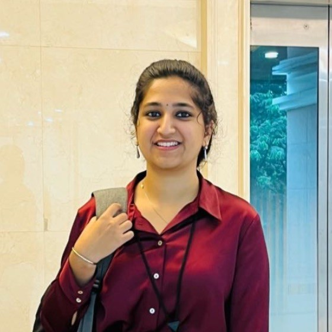

Varsha Kavalipati

Summary
Results-driven software engineer with more than two years of hands-on experience in maintaining and developing web applications.
Work Experience
Infosys
Development:
- Build self-contained, reusable, and testable modules and components for client application
- Ensure a clear dependency chain, in terms of both application logic as well as file relationships
- Produce clean, efficient code based on specifications using Angular and upgrade to the latest compatible version
- Experience with Backend Technologies and RESTful API
Production Management and version control:
- Handle production activities, coordinate with the team, monitor builds and deployments in Jenkins
Client Communication:
- Participate in Scrum meetings, implement Agile Project Management model and manage client communications
-
Techigai
- Developing and maintaining web applications
- Attend training and group learning sessions
Education
Bachelor of Technology, Computer Science & Engineering (Jul 2018 - Jun 2022)
- GPA: 9.33
Intermediate, MPC
- Percentage: 96.3
Secondary School, CBSE
- CGPA: 10
Skills
- Angular
- Infor HCM
- Spring Boot(Web Framework)
- Code Version Control
- Jenkins
Awards, Cerftifications and Achievements
- Commendable Performance Rating(2023)- Received the highest rating for outstanding work in the project
- Gold Medalist- Awarded the Second rank for my academic achievement in B.tech CSE for Batch 2018-22.
- Music Club Vice President (2021-2022)
- Best Student Award in 2014.
Others:
Contact Me